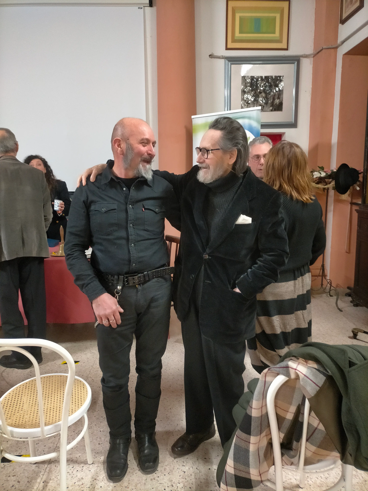

Santi Giancarlo, perugino si forma nel campo dell'arte da autodidatta sviluppando una ricerca alquanto originale e sia per i materiali utilizzati che per gli assemplaggi con cui fuoriescono le sue creazioni. Artista dei metalli, egli organizza e ricicla ogni sorta di elemento che venga gettato all'interno di un'autofficina facendolo rinascere a nuova vita attraverso sculture di ogni genere, assemblando ad uno stato interiore la materia ricontestualizzata a nuova essenza. Ha partecipato a numerose mostre collettive e personalii riuscendo a stupire ad ogni sua presentazione
Santi Giancarlo, giovane artista, è riuscito a trarre la sua ispirazione dal quotidiano lavoro. Il contatto con il metallo, i congegni i colori della automobili hanno fatto scattare la sua sensibilità creativa e lentamente le parti sostituite della auto, i congegni, gli sportelli non sono finite dai rottamatori, ma sono divenute i mezzi, gli elementi per le sue raffinate composizioni.
Da quando lo incontrai, una luminosa mattina di sole nel suo capannone tra la campagna di San Martino in Colle e timidamente mi fece vedere le sue prime opere, ha subito una rapida maturazione, la sua sensibilità si è potenziata, raffinata e ora ci propone delle opere sempre più interessanti.
Sono lieto di avere nel mio giardino una delle sue composizioni e invito a non perdere di vista questo giovane che farà sicuramente strada per il suo schietto e sincero talento.
GIANCARLO SANTI:
L'UOMO E LA MACCHINA
Ciò che differenzia uno spirito artistico e sognatore dagli uomini-macchina dell'era contemporanea sono le capacità creative e immaginifiche. Vivere senza domande, senza dubbi soprattutto senza desideri si addice agli automi; l'uomo di distingue da questi sopratutto per il suo mondo interiore, anche se solo pochi riescono a manifestare e a dare forma ai prori sentimenti e alle proprie emozioni: gli artisti. Giancarlo Santi è uno di questi, perchè è un uomo alla continua ricerca di una via di fuga dalle regole e dai doveri del lavoro e della vita quootidiana, che prova a rendere corporeo il suo mondo immaginifico e lo fa utilizzando la tecnica da lui più conosciuta: l'assemblaggio di pezzi di scarto di automobili riparate nella sua officina carrozeria. In passato, la scultura in metallo era realizzata prevalentemente con la tecnica della fusione, implicante diverse fasi di lavorazione che iniziavano con creazione del modello in gesso o cera per arrivare alla colata finale. Dai primi del Novecento si è diffusa una nuova tecnica più immediata: la saldatura, e il lavoro di Santi utilizza soprattutto questo tipo di lavorazione. Le suo opere nascondono delle riflessioni e dei sogni rielaborati giorno per giorno fino a trovare la forma più adatta di rappresentazione; da questo momento inizia il proceso di realizzazione in cui l'artista, attraverso la profonda conoscenza di materiali e tecniche, riesce a cerare sculture metalliche di grande effetto. Al contrario di Marcel Duchamp (1887-1968) che prelevava dalla realtà oggetti banali e anticelebrativi, raccogliendoli secondo il principio dell' "indifferenza visiva", ossia spogliandoli di ogni motivo di attrazione, per presentarli come opere d'arte, Santi utilizza la tecnica dell'assemblaggio, osservando e scegliendo accuratamente le parti di automobili non più utilizzabili, per riuscire a dare forma ai suoi pensieri. Mentre i Ready-made di Duchamp si ponevano come antimonumenti attraverso cui mettere in discussione lo stato dell'arte e Le macchine inutili di Jean Tinguely (1925), costruite anch'esse utilizzando materiale di scarto, avevano come fine l'irrisione della scultura celebrativa tradizionale e il culto contemporaneo per la macchina, che in queste appariva ridicola e priva di funzione, gli assemblaggi di Santi, non sono opere di rottura ma di celebrazione. I sogni dell'artista vengono esaltati al punto da diventare opere d'arte; l'uso del piedistallo, scansato dalle avangaurdie del Novecento, è da lui adottato come elemento glorificante e di equilibrio su cui innalzare le proprie emozioni. Molti dei meccanismi creati da Santi si muovono con piccoli tocchi dando una senzazione di movimento e talvolta di apparente instabilità. Le fantasie e i pensieri in cui si rifugia l'artista appartengono ad un mondo irrazionale e privo di schemi, che egli, sempre attraverso l'uso del piedistallo, ricollega alla realtà. Le creazioni di questo artista, in cui spesso il carattere figurativo predomina su quello astratto, si dividono in tre filoni, i quadri, le sculture e i Piccoli desideri, che sono composizioni di dimensioni minori. I quadri descrivono spesso la contrapposizione tra lo spirito fantastico e sognatore e il lato razionale. Come in Via di fuga, un pannello di lamiera in cui una diagonale divide la regolarità del quotidiano dell'evanescenza della sua anima, e in Concretezza e fantasia, dove questo dualismo viene rappresentato nell'interno di una stanza in forma di antitesi tra giorno e notte. Le sculture e i Piccoli desideri sono chiavi per uscire dalla realtà. Come in Orizzonti, una palma che richiama la siepe de L'infinito di Giacomo Leopardi. Talvolta, paradossalmente, è la perfezione dei meccanismi a permettere questa evasione, come per Io e il vento, opera in cui l'artista, sfruttando anche il più leggero soffio di vento, riesce ad imprimere un movimento ondulatorio, lieve e sinuoso, in palese contrasto con la solidità della materia impiegata. Riuscire a dare forma ai propri pensieri, come si è detto, è cosa per pochi e Santi è tra questi. Egli, in Il dualismo, rappresenta l'amore mediante il colore, e perciò utilizza il rosso dell'antiruggine che determina la passione tra amanti. E descrive la perfezione dell'incontro attraverso due sezioni di cerchio diseguali che si ricongiungono con un meccanismo azionato a mano da una leva. Le due parti, l'uomo e la donna, differenti tra loro risultano, nel cerchio che si forma, complementari e univocamente congiungibili. Incontrare Giancarlo Santi nella sua officina bottega d'arte, mentre racconta il significato della sua opera e si destreggia tra le automobili e i "rottami" rigenerati dal suo genio, dà la sensazione di assistere ad una coinvolgente danza tra lui e le sue opere d'arte.